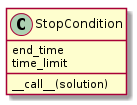
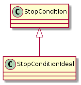
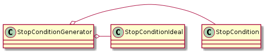
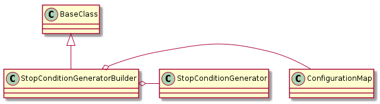

# python standard library
import time
import datetime
import random
# this package
from tuna import BaseClass
from tuna import ConfigurationError
The Stop Conditions are callable objects used by the optimizers to decide when to stop.
Constants for the Stop Conditions.
class StopConditionConstants(object):
__slots__ = ()
# options
ideal = 'ideal_value'
time_limit = 'time_limit'
end_time = 'end_time'
delta = 'delta'
default_delta = 0.001
maximum_time = 'maximum_local_time'
minimum_time = 'minimum_local_time'

StopCondition |
|
StopCondition.time_limit |
|
StopCondition.end_time |
|
StopCondition.__call__ |
|
StopCondition.reset |
The algorithms given in [EOM] use two conditions for stopping – either reaching the ideal optimization point or running out of time. I’m assuming that in most cases running out of time is the actual limit that will be used, but for the cases where a threshold is known, the StopConditionIdeal will check both the values and the time.

StopConditionIdeal |
|
StopConditionIdeal.__call__ |
Note
the call method for the StopConditionIdeal compares the candididate solution to the ideal value using a ‘>=’ inequality, so if solutions are objects instead of numbers they have to be able to have the inequality operations defined (e.g. __eq__, __gte__, etc.).
The StopConditionGenerator creates StopConditions (Ideal) with random end-times.

StopConditionGenerator |
|
StopConditionGenerator.random_function |
|
StopConditionGenerator.end_time |
|
StopConditionGenerator.stop_condition |
|
StopConditionGenerator.global_stop_condition |
|
StopConditionGenerator.__iter__ |
The StopConditionGenerator generates StopConditions. The first time it generates one it will set the end_time based on the time_limit unless it was already set. This way it won’t exceed the maximum time. Each StopCondition will get a different time-out that’s randomly generated based on the time_limit and minimum_time.
| Name | Description |
|---|---|
time_limit |
Seconds to generate stop-conditions |
maximum_time |
Upper-bound for the amount of time each StopCondition will run |
minimum_time |
Lower-bound for the amount of time each StopCondition will run |
end_time |
c-time to stop generation |
ideal |
If set the conditions will stop when the test value is close enough to it |
delta |
Difference from ideal for stop-condition |
use_singleton |
If True use same stop-condition object (but change the time-outs) |
random_function |
Function to use instead of random.uniform to get time-outs |
Right now the times are generated uniformly, so the expected call will be random.uniform(minimum_time, time_limit). If you want to use a different function you can pass it into the constructor, so long as it can be called with the same values.
The use_singleton is a little misleading – the StopConditionGenerator stores the object but creating a new StopConditionGenerator will create a new StopCondition so it’s not a True singleton.
Although you could pull the stop_condition property to get new stop-conditions, the intention is to use it as and iterator. Let’s assume you have a StopConditionGenerator object named stop_generator, then the way to used it might be something like:
for stop_condition in stop_generator:
while not stop_condition(candidate):
new_candidate = Tweak(candidate)
if Quality(new_candidate) > Quality(candidate):
candidate = new_candidate
return candidate
A builder of StopConditionGenerators.

StopConditionGeneratorBuilder |
|
StopConditionGeneratorBuilder.product |
A builder of stop-conditions.
StopConditionBuilder |
|
StopConditionBuilder.product |